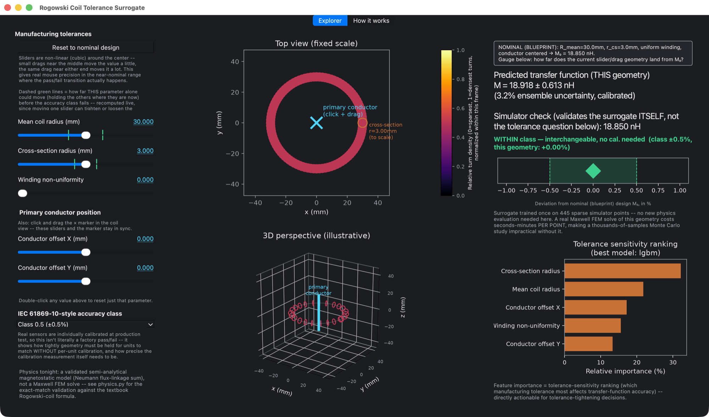

- Physics
- A semi-analytical magnetostatic model: Neumann flux-linkage summed over 100 discrete turns, verified exactly against the textbook mutual-inductance formula before any data was generated.
- Role of ML
- Tolerance studies need thousands of Monte Carlo samples, and a Maxwell FEM solve per sample doesn't scale. The surrogate, trained on 512 physics evaluations, makes the study live and reports how confident each prediction is.
Background
A Rogowski coil's transfer function — its mutual inductance — depends on geometry that's never perfectly manufactured: mean coil radius, cross-section radius, winding uniformity, and how centered the primary conductor sits inside the coil. Tolerances on all of these shift the transfer function away from its nominal calibration, and IEC 61869-10 accuracy classes set how far that drift is allowed to go before units stop being interchangeable without individual recalibration. Exploring that 5-parameter tolerance space by hand, one field solve at a time, doesn't scale to a real Monte Carlo tolerance study — this project (built the same session as the CT tamper-immunity project, same architecture, different physics) was built to make that study interactive.
Approach
I implemented a real closed-form Rogowski magnetostatic model — 100 discrete turns, uniform-field-over-small-loop approximation, summed around the coil — and validated it against the textbook closed-form mutual-inductance formula before trusting it further. I ran a 512-point scrambled-Sobol design of experiments (445 train / 67 held-out validation), sampling the conductor offset on a disk rather than a box so every sample stays physically inside the coil's aperture, and let FLAML AutoML pick the winning model family (LightGBM again), wrapped in a 25-member calibrated bootstrap ensemble.

Process
The ensemble's uncertainty was checked against real held-out coverage rather than assumed correct: raw 1-sigma coverage measured 77.6%, corrected with a single calibration factor (0.79, chosen on validation data, not tuned against it) to hit the true 68.27% target. I also drew an explicit, disclosed framing distinction into the accuracy-class gauge itself: it checks geometric deviation from a shared nominal design, not whether a specific manufactured unit would fail inspection — real units are individually calibrated at production test, and conflating the two would make the tool say more than the physics supports.
Results
- Held-out relative RMSE of 1.92% (LightGBM).
- A live desktop app: drag any of the 5 tolerance parameters, or click-drag the conductor position directly on the coil cross-section, and see the predicted transfer function, its calibrated uncertainty, and whether the design stays inside a chosen IEC accuracy class — instantly, versus a full field solve per point.
- Tolerance-sensitivity ranking (cross-section radius and mean coil radius dominate) is directly actionable for deciding which manufacturing tolerance to tighten first.
- This project and its CT tamper-immunity sibling became the basis for a CADFEM World Conference 2026 talk — the same explorer screenshots and sensitivity charts were adapted directly into the presentation deck.
Live demo
Screen recording of the packaged app: dragging tolerance sliders and the conductor position, and watching the predicted transfer function and accuracy-class verdict respond in real time.